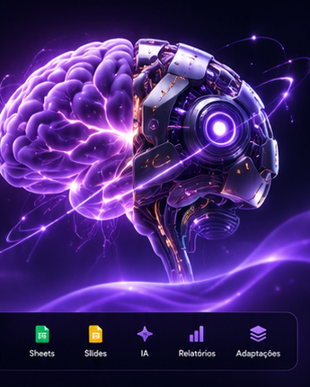
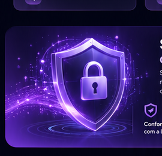
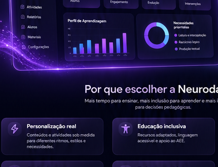
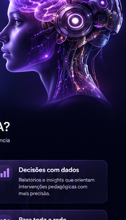
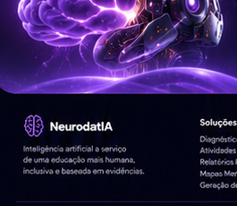

Diagnóstica
Avalie o nível de aprendizagem com análises inteligentes e identifique necessidades de forma rápida e precisa.
→A NeurodatIA é a plataforma de inteligência artificial que apoia educadores na análise de aprendizagem, criação de atividades personalizadas, relatórios pedagógicos e inclusão educacional, com dados seguros e em conformidade.

Recursos integrados para diagnosticar, planejar, personalizar e acompanhar a aprendizagem de cada estudante.
Avalie o nível de aprendizagem com análises inteligentes e identifique necessidades de forma rápida e precisa.
→Gere atividades personalizadas por nível, habilidade, interesse e necessidades específicas, incluindo AEE.
→Relatórios completos, claros e automatizados para acompanhamento, registro e tomada de decisão.
→Organize conteúdos, ideias e conexões de forma visual para facilitar o ensino e a aprendizagem.
→Acompanhe a evolução, evidências de aprendizagem e intervenções ao longo do tempo.
→Crie planos de aula, sequências didáticas, resumos, rubricas e recursos pedagógicos em poucos cliques.
→
Seus dados e os dados dos estudantes são tratados com alto padrão de segurança, transparência e conformidade com a LGPD.
Um fluxo simples, rápido e intuitivo, da análise ao material pronto para uso em sala de aula.
Importe informações da turma, avaliações, formulários, relatórios e registros existentes.
A IA interpreta os dados, identifica padrões e aponta necessidades de aprendizagem.
Crie atividades, relatórios, planos e recursos adaptados para cada aluno ou grupo.
Disponibilize para professores, coordenação e equipe de apoio com segurança e controle.


Mais tempo para ensinar, mais inclusão para aprender e mais inteligência para decisões pedagógicas.
Conteúdos e atividades sob medida para diferentes ritmos, estilos e necessidades.
Recursos adaptados, linguagem acessível e apoio ao AEE.
Relatórios e insights que orientam intervenções pedagógicas com mais precisão.
Automatize tarefas e foque no que realmente importa: as pessoas.
Diagnóstico, planejamento, materiais, acompanhamento e relatórios integrados.
Escalável e flexível, atende professores, coordenação, gestão e equipes de apoio.

Experimente a plataforma e descubra como a IA pode tornar o ensino mais personalizado, inclusivo e eficiente.